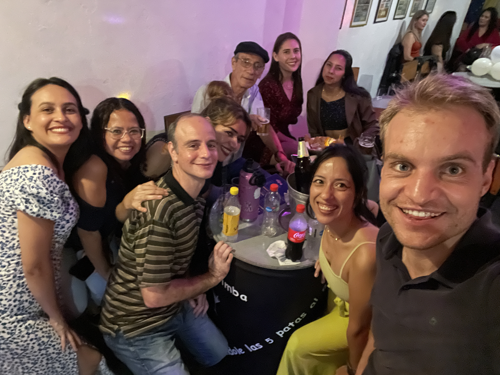
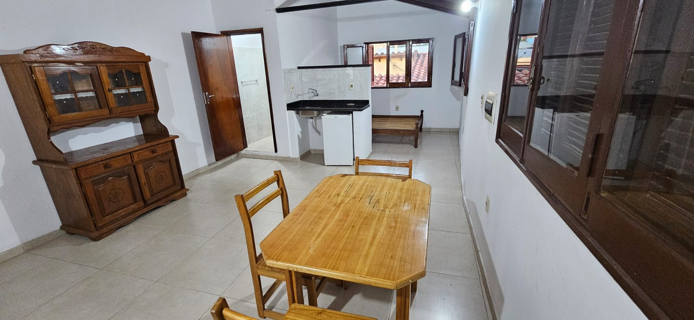
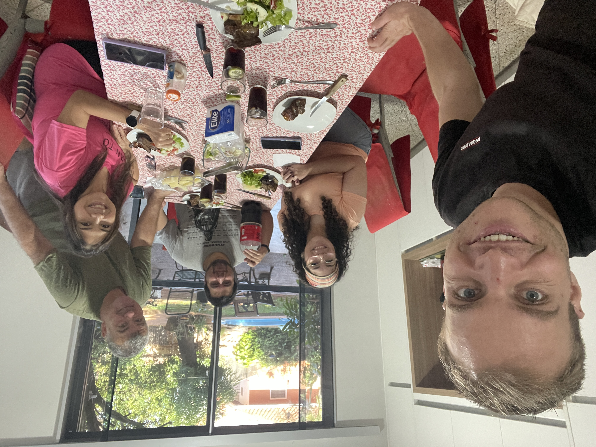

18 Gestrand
in Paraguay
De eerste co-living,
het roer om
en Paraguay als nieuwe thuis

Na 4,5 maand vrijwilligerswerk was de tijd rijp om terug te keren naar de grote stad. Ik stond te popelen om het programmeren weer wat meer op te pakken en het liefst in een omgeving met andere programmeurs. Hoe vaak hebben jullie mij al niet horen zeggen dat ik zo graag eens die digital nomads wil ontmoeten? Na al die maanden was daar dan eindelijk het moment en liep ik vol goede moed het luxe ZTColiving binnen, gelegen in Asunción, de hoofdstad van Paraguay. Ja, je hoort het goed co-living. Een co-working is een kantoor en een co-living, een appartementencomplex speciaal voor digital nomads met alle faciliteiten en waar je dus ook kan blijven slapen. ‘Waanzinnig!’ zei ik tegen mezelf toen ik het spiksplinternieuwe gebouw aantrof. De eerste 3 dagen was ik overal te vinden: In de fitness, het zwembad, op het dakterras met uitzicht over de stad en ook op mijn kamer met flatscreen en balkon. Dit was de bevestiging dat dit was waar ik op hoopte.
 In euforie wierp ik nog eens een blik op de kaart en bedacht me hoe gaaf het wel niet zou zijn om na dit avontuur hier in Asuncion zo’n coliving ook in een ander land te doen. Wie de kaart erbij pakt, ziet dat wanneer je van Peru via Bolivia naar Paraguay reist, je enkel nog Brazilie tegenkomt voor je het meest oostelijke puntje van het continent en de Atlantische Oceaan bereikt. De expat experience leek nu echt los en in mijn enthousiasme boekte ik al een vlucht om deze digital nomad-ervaring buiten Zuid-Amerika voort te zetten. Want ja, daar was ik immers nog nooit geweest. Het zou een prachtig plan worden, eerst op vakantie naar Brazilië en daarna nog een hele gave andere co-living bezoeken met surfmogelijkheden en strand.
In euforie wierp ik nog eens een blik op de kaart en bedacht me hoe gaaf het wel niet zou zijn om na dit avontuur hier in Asuncion zo’n coliving ook in een ander land te doen. Wie de kaart erbij pakt, ziet dat wanneer je van Peru via Bolivia naar Paraguay reist, je enkel nog Brazilie tegenkomt voor je het meest oostelijke puntje van het continent en de Atlantische Oceaan bereikt. De expat experience leek nu echt los en in mijn enthousiasme boekte ik al een vlucht om deze digital nomad-ervaring buiten Zuid-Amerika voort te zetten. Want ja, daar was ik immers nog nooit geweest. Het zou een prachtig plan worden, eerst op vakantie naar Brazilië en daarna nog een hele gave andere co-living bezoeken met surfmogelijkheden en strand.
 Maar naarmate de dagen vorderden in deze coliving nam de hosanna stemming toch wat af. Dat kwam omdat ik er achter kwam dat de wijk waar deze coliving stond, eigenlijk helemaal niet het authentieke centrum van Asunción was, maar een ver buiten het centrum uit de grond gestampte luxe wijk bedoeld voor welgestelde mensen. Mensen uit Paraguay zelf hadden dat donders goed in de gaten. Zo ging ik bijvoorbeeld naar de tandarts die van mening was dat ik maar liefst vier gaatjes zou hebben, wat voor slechts 400 dollar kon worden opgeknapt. En de receptionist van de co-living had er een handje van om de gasten (waaronder ik dus) een taxi aan te bieden waar hij dan ook weer aan verdiende. Maar los van de prijzen, ontbrak het ook aan gezelligheid. Er was helemaal geen lokale supermarkt, groen of een parkje. De digital nomads waar ik eindelijk mee in contact kwam, voornamelijk uit Italië en Spanje, waren overwegend echt toffe mensen, maar iedereen leefde ook erg individueel, mede omdat er door de coliving niets georganiseerd werd om mensen met elkaar in contact te brengen. Het was echt gericht op gemak zodat je zelf bijna niets hoefde te doen, zo lieten veel nomads 5 dagen in de week lunch en avondeten bezorgen omdat het toch zo goedkoop was. En het personeel was in zulke grote getalen aanwezig dat je soms tegen 4 man moest vertellen hoe je dag was voor je naar buiten kon. Nou je raadt het misschien al: Dit was niet echt iets voor mij. Ik had samen met chat GTP nog een planning gemaakt waarop bijvoorbeeld stond ‘ontbijtje met coliving mensen’, maar al met al kwam het niet van de grond.
Maar naarmate de dagen vorderden in deze coliving nam de hosanna stemming toch wat af. Dat kwam omdat ik er achter kwam dat de wijk waar deze coliving stond, eigenlijk helemaal niet het authentieke centrum van Asunción was, maar een ver buiten het centrum uit de grond gestampte luxe wijk bedoeld voor welgestelde mensen. Mensen uit Paraguay zelf hadden dat donders goed in de gaten. Zo ging ik bijvoorbeeld naar de tandarts die van mening was dat ik maar liefst vier gaatjes zou hebben, wat voor slechts 400 dollar kon worden opgeknapt. En de receptionist van de co-living had er een handje van om de gasten (waaronder ik dus) een taxi aan te bieden waar hij dan ook weer aan verdiende. Maar los van de prijzen, ontbrak het ook aan gezelligheid. Er was helemaal geen lokale supermarkt, groen of een parkje. De digital nomads waar ik eindelijk mee in contact kwam, voornamelijk uit Italië en Spanje, waren overwegend echt toffe mensen, maar iedereen leefde ook erg individueel, mede omdat er door de coliving niets georganiseerd werd om mensen met elkaar in contact te brengen. Het was echt gericht op gemak zodat je zelf bijna niets hoefde te doen, zo lieten veel nomads 5 dagen in de week lunch en avondeten bezorgen omdat het toch zo goedkoop was. En het personeel was in zulke grote getalen aanwezig dat je soms tegen 4 man moest vertellen hoe je dag was voor je naar buiten kon. Nou je raadt het misschien al: Dit was niet echt iets voor mij. Ik had samen met chat GTP nog een planning gemaakt waarop bijvoorbeeld stond ‘ontbijtje met coliving mensen’, maar al met al kwam het niet van de grond.
Je moet dingen proberen om erachter te komen of het bij je past, dus al met al een goede les. Maar hoe dan verder? Deze maand was een stuk duurder en daarnaast had ik wat schrik van de eerste keer dat de beleggingsbeurzen leken te gaan dalen. Ik had zo erg uitgekeken naar de plannen die ik al had voor Brazilië en daarna, en toch besloot ik om het hele plan voor nu af te breken, een groot keerpunt in de reis. Ik zag opeens ook in, dat ik nu al een jaar elke maand op een andere plek woon, en daarom was het nu misschien wel een goed ergens vast te wonen. Op de bezochte salsa feestjes hier in Asuncion, had ik leuke mensen ontmoet, die mij goede moed gaven om in deze stad een leuke tijd te krijgen als ik er wat langer zou blijven.
Eind april stak ik de Argentijnse grens over en keerde ik direct weer terug naar Paraguay waarmee mijn visum voor Paraguay weer 3 maanden geldig was. Ik belandde in de meest lokale wijk, het authentieke centrum waar op een verdwaalde backpacker na, echt waar geen toerist te bekennen is. Ik heb een prachtige grote kamer op een binnenhofje waardoor je helemaal geen last hebt van de chaos op straat. De verhuis was veel werk omdat de kamer nog onder een dikke laag stof zat en er een heleboel spullen geregeld moesten worden. Mijn onderbroeken met gaten en botte scheermesjes waren aan vervanging toe. De grootste uitdaging was misschien nog wel het wennen aan het leven tussen de lokale mensen. Ik val hardstikke op, en veel mensen slapen hier op straat en vragen mij van alles. Als ik bijvoorbeeld de vuilniszak weg zet, vragen ze of ze een trui van mij mogen hebben. Hele families met baby's en kleine kinderen zitten op de stoep vlak voor de ingang van restaurants en vragen om geld, of schaars geklede jonge meiden die hun lichaam aanbieden om aan geld te komen. Je gelooft soms niet wat je ziet. In een wildvreemde stad opnieuw beginnen roept bij mij herinneringen op, want dat deed ik eerder in Brisbane, waar ik een paar maanden mocht wonen. Maar daar ging ik aan de slag in een bar en had ik binnen no time dikke vrienden. Nu is het zelfs voor mij een enorme uitdaging en tot op dit moment ben ik er nog niet helemaal zeker van, hoe dit zal uitpakken.
Het verschil is groot. Soms giebelen mensen als ik ergens de winkel in kom, of vragen ze wat ik verdien. Veel mensen hebben het beeld dat Europa het walhalla is en waar iedereen rijk en gelukkig is. Ik moet extra waakzaam zijn, al helemaal als ik om na een werkdag in de donkerte huiswaarts loop. Een sloppenwijk genaamd ‘La Chacarita’, daar mag ik echt niet komen, en ja dan realiseer je je dat veiligheid een bepaalde prijs heeft. Want daartegenover staat dat mijn vaste lasten nu 300 euro bedragen, wat natuurlijk niet veel geld is. Ik hoor een gruwelverhaal over een backpacker die aan het stappen is en de volgende morgen wakker wordt in een onbekende ruimte met een snee in zijn buik. Later blijkt dat hij gedrogeerd is en dat ze zijn nier hebben gestolen, die ze voor veel geld kunnen doorverkopen. Het is niet dat de mensen in Asuncion niet vriendelijk zijn. Integendeel. Ik geloof niet dat ik ooit zulke vriendelijke mensen heb ontmoet. Een zojuist gepensioneerd echtpaar Enrique en Luz die ik ontmoette bij de salsales hadden mij uitgenodigd om bij hun gezin onafhankelijkheidsdag te komen vieren. Ook op straat wil iedereen een praatje met je maken en je uitnodigen om bij hen te komen eten. Maar op dit moment voel ik toch vooral een barrière omdat je ‘anders’ bent en dat maakt het thuis voelen op dit moment nog wel een beetje lastig.
 Tot slot nog werk nieuws, want mijn baas Ramon heeft aangegeven dat binnenkort het werk voor onze object herkenningswebsite BOX21 zal gaan stoppen. Help, wat nu? Financieel gezien is het natuurlijk maar net goed dat ik de beslissing heb genomen hier wat langer in Asuncion te blijven. Nu heb ik in ieder geval de tijd om op zoek te gaan naar een alternatief zonder dat dat direct tot financiele zorgen leidt. Erg jammer dat het werk gaat stoppen, niet alleen vanwege het inkomen, maar ook omdat Ramon een erg fijn mens is om mee samen te werken. Jammer omdat het een herinnering is aan hoe we samen BOX21 hebben opgebouwd, en hoe ik daar steeds meer van betekenis mocht zijn, al blijft het balen dat ik niet heb mogen meemaken dat de website ook echt ‘online’ is gegaan. BOX21 was de veranderingen in mijn leven die jullie hier in de blogs hebben kunnen lezen. Hoewel de teleurstelling groot is, kijk ik ook uit naar nieuwe kansen. Want ook al is BOX21 een website waar veel artificial intelligence in wordt gebruikt, de opdrachten waar Ramon mij aan liet werken draaide voornamelijk om het verzorgen van het uiterlijk van de website en dat is natuurlijk jammer als je juist heel graag ook meer over AI wil leren. Gelukkig heb ik wel diep in de code gedoken waarbij ik ontiegelijk veel basisvaardigheden heb mogen leren die in de zoektocht naar een nieuw programmeer avontuur natuurlijk van onschatbare waarde zullen gaan zijn.
Tot slot nog werk nieuws, want mijn baas Ramon heeft aangegeven dat binnenkort het werk voor onze object herkenningswebsite BOX21 zal gaan stoppen. Help, wat nu? Financieel gezien is het natuurlijk maar net goed dat ik de beslissing heb genomen hier wat langer in Asuncion te blijven. Nu heb ik in ieder geval de tijd om op zoek te gaan naar een alternatief zonder dat dat direct tot financiele zorgen leidt. Erg jammer dat het werk gaat stoppen, niet alleen vanwege het inkomen, maar ook omdat Ramon een erg fijn mens is om mee samen te werken. Jammer omdat het een herinnering is aan hoe we samen BOX21 hebben opgebouwd, en hoe ik daar steeds meer van betekenis mocht zijn, al blijft het balen dat ik niet heb mogen meemaken dat de website ook echt ‘online’ is gegaan. BOX21 was de veranderingen in mijn leven die jullie hier in de blogs hebben kunnen lezen. Hoewel de teleurstelling groot is, kijk ik ook uit naar nieuwe kansen. Want ook al is BOX21 een website waar veel artificial intelligence in wordt gebruikt, de opdrachten waar Ramon mij aan liet werken draaide voornamelijk om het verzorgen van het uiterlijk van de website en dat is natuurlijk jammer als je juist heel graag ook meer over AI wil leren. Gelukkig heb ik wel diep in de code gedoken waarbij ik ontiegelijk veel basisvaardigheden heb mogen leren die in de zoektocht naar een nieuw programmeer avontuur natuurlijk van onschatbare waarde zullen gaan zijn.
 Ook al lijken het turbulente tijden, ik woon inmiddels al een maand in het centrum Asuncion. Ik heb een sportschool waar ik drie keer per week fitness om lekker mijn hoofd te legen en ik heb een leuke dansschool waar ik bijna een jaar na vertrek uit Barcelona eindelijk weer herenigd ben met het dansen van bachata. Afgelopen weekend organiseerde onze dansschool zelfs een bachata optreden in het casino van de stad. Met 8 paren dansten we zo synchroon mogelijk op de muziek Romeo Santos. Dan leef je even helemaal op, terwijl er gerust ook momenten zijn, waarop ik het even wat minder zie zitten en best wel klaar ben met het in het buitenland zitten. Maarja Rome is ook niet in een dag gebouwd en ik moet mezelf ook wat tijd gunnen om hier wat te wennen. Ik heb een weekplanning gemaakt waarin precies staat wat ik wanneer doe. Dat werkt want hierdoor hoef ik niet iedere dag te beslissen over waar ik bijvoorbeeld ga werken of eten. Sommige werkdagen start ik met lezen van de Paraguayaanse krant, een yoga lesje of schrijven in mijn dagboek. Als je het als digital nomad voor elkaar krijgt om goed voor jezelf te zorgen, dan ben je eigenlijk al een heel eind. Zelfs na twee jaar als digital nomad blijf ik ontdekken wat voor mij wel of niet werkt in deze levensstijl. Hierdoor is ook deze uitdagende periode een waardevol onderdeel van mijn reis geworden, en iets wat ik voor geen goud had willen missen.
Ook al lijken het turbulente tijden, ik woon inmiddels al een maand in het centrum Asuncion. Ik heb een sportschool waar ik drie keer per week fitness om lekker mijn hoofd te legen en ik heb een leuke dansschool waar ik bijna een jaar na vertrek uit Barcelona eindelijk weer herenigd ben met het dansen van bachata. Afgelopen weekend organiseerde onze dansschool zelfs een bachata optreden in het casino van de stad. Met 8 paren dansten we zo synchroon mogelijk op de muziek Romeo Santos. Dan leef je even helemaal op, terwijl er gerust ook momenten zijn, waarop ik het even wat minder zie zitten en best wel klaar ben met het in het buitenland zitten. Maarja Rome is ook niet in een dag gebouwd en ik moet mezelf ook wat tijd gunnen om hier wat te wennen. Ik heb een weekplanning gemaakt waarin precies staat wat ik wanneer doe. Dat werkt want hierdoor hoef ik niet iedere dag te beslissen over waar ik bijvoorbeeld ga werken of eten. Sommige werkdagen start ik met lezen van de Paraguayaanse krant, een yoga lesje of schrijven in mijn dagboek. Als je het als digital nomad voor elkaar krijgt om goed voor jezelf te zorgen, dan ben je eigenlijk al een heel eind. Zelfs na twee jaar als digital nomad blijf ik ontdekken wat voor mij wel of niet werkt in deze levensstijl. Hierdoor is ook deze uitdagende periode een waardevol onderdeel van mijn reis geworden, en iets wat ik voor geen goud had willen missen.